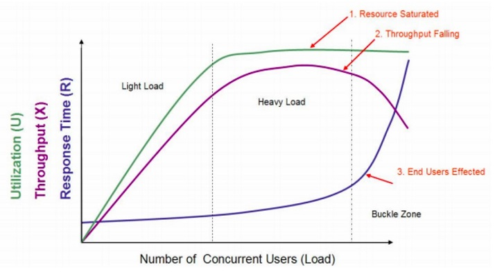
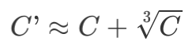

TPS和响应时间的关系[1] #

在这个图中，定义了三条曲线、三个区域、两个点以及三个状态描述。
- 三条曲线：吞吐量的曲线（紫色）、使用率 / 用户数曲线（绿色）、响应时间曲线（深 蓝色）。
- 三个区域：轻负载区（Light Load）、重负载区（Heavy Load）、塌陷区（Buckle Zone）。
- 两个点：最优并发用户数（The Optimum Number of Concurrent Users）、最大并发 用户数（The Maximum Number of Concurrent Users）。
- 三个状态描述：资源饱和（Resource Saturated）、吞吐下降（Throughput Falling）、用户受影响（End Users Effected）。
性能指标的计算方式 [2] #
公式（1）：
并发用户数计算的通用公式：C = nL/T
其中 C 是平均的并发用户数；n 是 login session 的数量；L 是 login session 的平均长
度；T 指考察的时间段长度。
公式（2）：
并发用户数峰值：

C’指并发用户数的峰值，C 就是公式（1）中得到的平均的并发用户数。该公式是假设用
户的 login session 产生符合泊松分布而估算得到的。
仔细搜索之后发现会发现这两个公式的出处是 2004 年一个叫 Eric Man Wong 的人写的一篇名叫《Method for Estimating the Number of Concurrent Users》的文章。中英文我都反复看到很多篇。同时也会网上看到有些文章中把这个文章描述成“业界公认”的计算方法。
性能测试 #
- 性能测试
- 环境假设
- 负载模型【4，5】
-
- 人为模拟请求
-
- 复制线上流量
-
- 引流
-
- 故障模拟【6】
- Eg. tcpkill
- 负载模型【4，5】
- 结果分析
- 瓶颈分析
- 热点 【5】
- 20%代码影响了80%
- 类型【5】
- benchmark
- 性能测试，负载测试，压力测试
- 稳定性测试
- 流程 [参考3]
-
- 定义响应时间，TP99
-
- 这个响应时间的限制下，找到最高的吞吐量（负载测试）
-
- 二步测试得到的吞吐量连续7天的不间断的压测系统（稳定性测试）
-
- 找到系统的极限值（压力测试，抗峰值 peek）
-
- Burst Test
-
- 注意点
- 平均值不靠谱，TP才靠谱(百分比分布统计)
- 平均值
- 标准方差
- 百分位数
- 中位数
- 关系
- 响应时间要和吞吐量挂钩
- 不同的吞吐量会有不同的响应时间
- 响应时间/吞吐量要和成功率挂钩
- 响应时间要和吞吐量挂钩
- 平均值不靠谱，TP才靠谱(百分比分布统计)
- 应用程序Profile
- 问题：让程序运行的性能变低
- 环境假设
性能监控 #
- 性能优化
- 监控
- 分层
- 链路跟踪，APM
- 中间件监控 Eg.Tomcat 线程池
- 基础设施监控 Eg. cpu使用率，负载
- 数据可视化，可观察性
- 折线图
- 散点图
- 热图
- 告警通知
- 阈值 Eg. 比如大于TP99%
- 性能指标
- 响应时间，吞吐量，成功率【5】
- 低延迟，会有高吞吐
- 分层
- 方法论【7->2.5节】
- 工具法
- USE，识别系统瓶颈
- Utilization(使用率)
- Saturation(饱和度, 负载)
- Errors(错误)
- 工作负载特征归纳
- 延迟分析
- 静态性能调整
- 缓存调优
- 监控
压测工具 #
ab Jmeter wrk
网络 #
httpstat [20]
参考 #
- 02丨性能综述：TPS和响应时间之间是什么关系？ 高楼
- 03丨性能综述：怎么理解TPS、QPS、RT、吞吐量这些性能指标？ 高楼
- 性能测试应该怎么做？
- Go to Page self
- 关于容量预估/性能压测的思考 失效
- Go to Page self 重复的
- 《性能之巅：洞悉系统、企业与云计算》
- httpstat go httpstat python